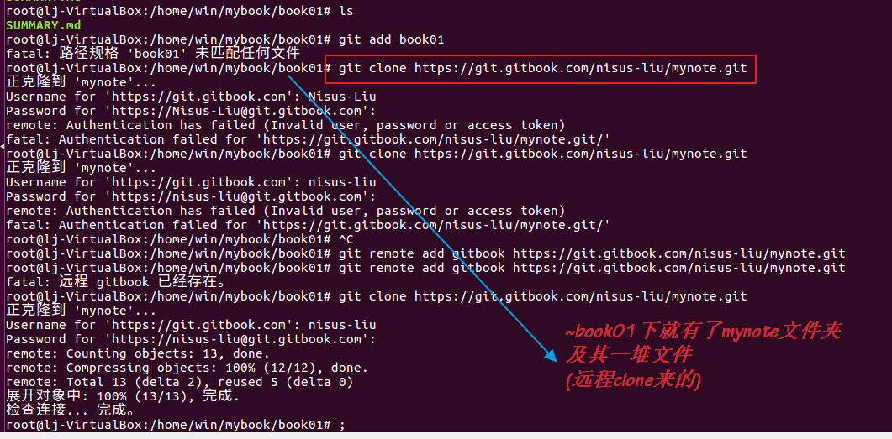
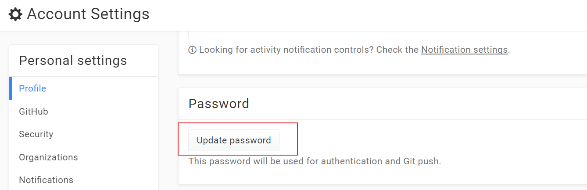
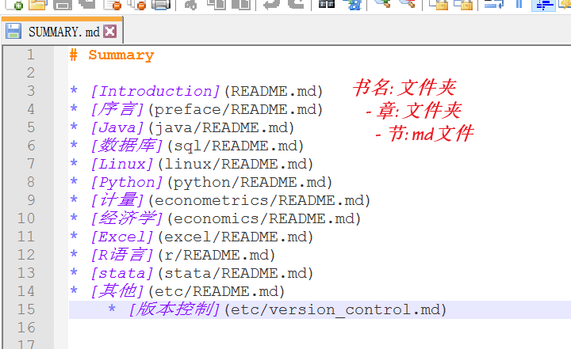
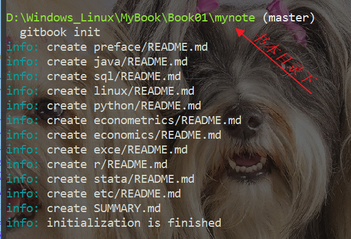
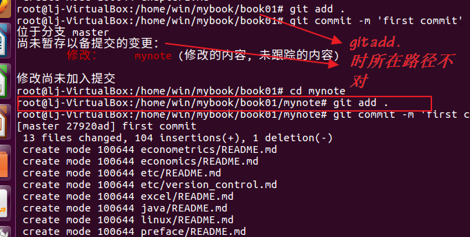
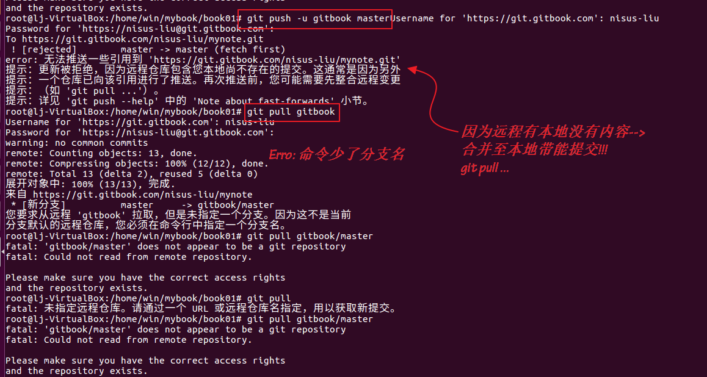
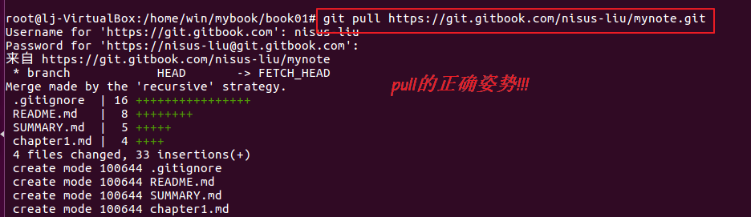
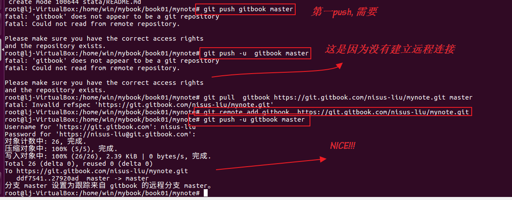
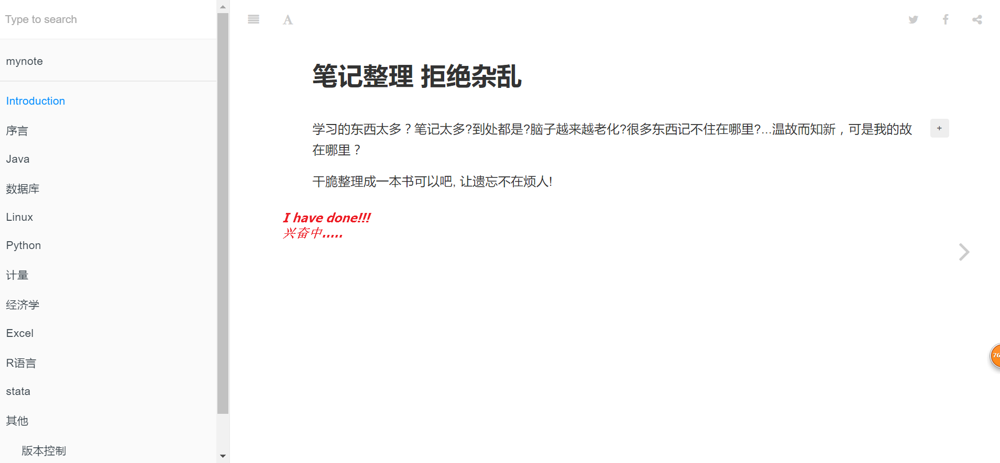

Instruction
玩转gitbook需要以下兵器ref.
- gitbook 这个就是自身, 必须有的
- node.js gitbook的依赖, 也得有. 用它的包管理器
npm来下载gitbook - git 用于版本控制, 如果不止满足于本地建书和本地浏览, 那么发布工具必须会是. 当然也可以用
gitbook editor应该不需要会用git, 但是貌似并不好用, 另外git作为程序猿是要必会的小技能. - GitHub 可选项, 如果想利用GitHub管理gitbook版本, 或者需要多人合作, 接受评论...GitHub是个非常好的平台.
前面的基础操作参见网上资料, 如《Gitbook入门教程》ref基本没有问题.
ref. Gitbook 入门教程 ↩
环境搭建
安装nodejs
sudo apt-get install nodejs
sudo apt-get install nodejs-legacy //应该会有提示哟啊安装这个
安装gitbook
npm install -g gitbook-cli
安装git
sudo apt-get git
gitbook几个重要的命令
1.gitbook init
- 本地建立文件夹, 用来存放书籍数据 如testbook
- 初始化
testbook路径下打开cmd, 输入:
gitbook init
2.gitbook serve
书籍生成静态网页, 这也是默认方式. 如果需要生成PDF等文件需要相应的插件, 待研究.
gitbook serve生成_book文件夹, 并监听4000端口.
gitbook serve
3.gitbook build
git build命令编译到指定目录, 不会打开端口监听.
gitbook build 图书目录 输出目录
Erro: 网页不能实现跳转
gitbook版本较高(如gitbook 3.2.3及以上)有可能导致编译出来的文件不能实现跳转.
采用:
gitbook build --gitbook=2.6.7
将在线已有的book克隆至本地>>修改>>提交同步
1.克隆远程书库
git clone https://git.gitbook.com/nisus-liu/mynote.git

Note: 开始总是报错:
remote: Authentication has failed (Invalid user, password or access token)
fatal: Authentication failed for 'https://git.gitbook.com/nisus-liu/mynote.git/'
原因: 通过GitHub关联登录gitbook, 应该是没有密码的, 只有默认的username(GitHub用户名小写), 所以需要在gitbook上更新密码(update code)

2.配置SUMMARY.md文件
!
3.gitbook init
这个神器的命令将根据上面的summary.md的目录创建出相应的文件件和md文件. 我习惯称之为骨架. 放心的是已有的目录和文件不会被覆盖.

4.写书
在相应的骨架文件基础上加血加肉即可. 如果中途发现已有的骨架不是很适合, 也可以随意的增删改之, 但要记得同步至summary.md文件中. 据我所知, 目前gitbook还不够智能到根据已有的文件自动生成骨架信息.
4.提交更新
当你更新完了, 但是git还不知道, 所以要必须进行适当的操作才行. 用到两个命令:git add, git commit.
- git add: 暂存以备提交的变更
- git commit -m '备注信息' //有文章说这个备注信息必须得有, 否则报错.

5.提交至gitbook
这部分有点麻烦, 容易碰到错误.
将本地的git 仓库与gitbook.com上远程仓库连接
git remote add gitbook https://git.gitbook.com/nisus-liu/mynote.git
Note: 接下来通常使用
push命令同步至远程. 但是有可能报错:

这个时候就需要利用pull将远端的内容合并至本地.
git pull ~mynote.git
git push -u gitbook master
最后, 终于大功告成!
登录https://nisus-liu.gitbooks.io/mynote就可以欣赏他们美丽的样子了!

本地创建书籍>>同步到远程
学会了上文的操作, 这部分基本不是问题了.
- 建立书籍本地仓库, git生成
.git文件夹 - 建立骨架文件, gitbook init
- git add . / git add 文件名
- git commit -m '备注'
- git push -u gitbook master
碰到具体的报错, 灵活应对! good night! 2017-9-28 03:00:52